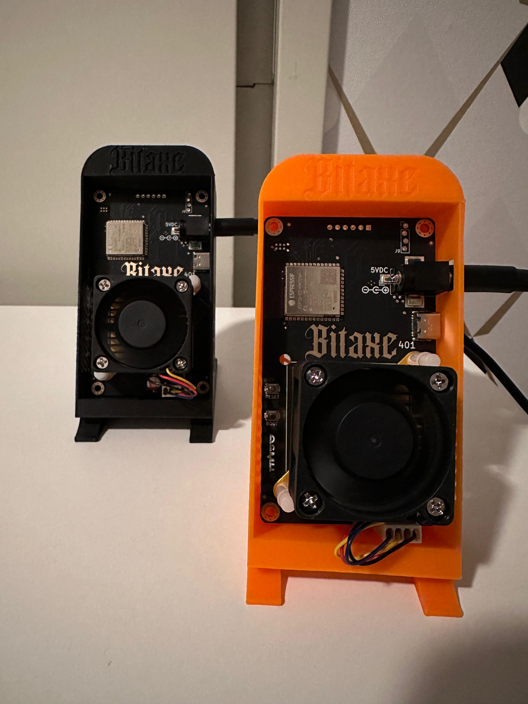

Bitaxe Miners
Bitaxe miners are quiet, cool, low-power, and fully open-source Bitcoin miners that you can run at home.
What are Bitaxe miners
The official website explains it perfectly ⇒ https://bitaxe.org/
Bitaxe is a Bitcoin miner based on an open-source design and a modern mining ASIC, offering efficiency and customization for users.
The open-source nature allows users to inspect, modify, and enhance the hardware and software to optimize performance based on specific needs or mining environments. Bitaxe is ideal for miners looking for greater control over their operations while contributing to the decentralization of the Bitcoin network.
My two Bitaxe Supra 401 miners running at home.
To me, this project is all green lights. Both the hardware and firmware are open source. You can run them at home, they won't take much space, won't consume much power and won't make much noise.
Initiatives like this help the fight against mining centralization. You can make a donation here.
Bitaxe models
There are several Bitaxe models:
| Model Series | ASIC Chip | Hash Rate | Used on |
|---|---|---|---|
| Bitaxe Gamma (600 Series) | 1 x BM1370 | ~ 1.2 TH/s | Antminer S21 Pro |
| Bitaxe Supra (400 Series) | 1 x BM1368 | ~ 700 GH/s | Antminer S21 |
| Bitaxe Ultra (200 Series) | 1 x BM1366 | ~ 500 GH/s | Antminer S19XP |
| Bitaxe Max (100 Series) | 1 x BM1397 | ~ 300 GH/s | Antminer S17 |
| Bitaxe SupraHex (700 Series) | 6 x BM1368 | ~ 4.2 TH/s | Antminer S21 |
| Bitaxe UltraHex (300 Series) | 6 x BM1366 | ~ 3 TH/s | Antminer S19XP |
Some of those models are still under development and receiving revisions. You can find more details on Bitaxe's official website.
Where to buy Bitaxe miners
You can find a list of vendors here.
Remember: Bitaxe miners are 100% open source. Performances should remain consistent regardless of the vendor, though slight variations in assembly and design may occur.
You are also free to purchase all the parts and assemble your miner yourself.
Setting up your Bitaxe miner
Once you've received or assembled your Bitaxe, you can set it up and start mining.
Step 1 - Find your model version
Bitaxe is under active development, with new features and bug fixes frequently released. In addition to your model, you must also note your version/revision number to ensure you flash the correct firmware in the next steps.
In my case, my model is a Bitaxe Supra. My version/revision number is 401. It can be found on the Bitaxe's motherboard:

Bitaxe Supra v401
Step 2 - Download the firmware
Go to this page and download the latest stable firmware for your model and version. In my case:
esp-miner-factory-401-v2.5.0.binThis file contains:
- The bitaxe firmware
- The web UI (to interact with and configure your Bitaxe)
- A default configuration
Step 3 - Connect to your PC
Plug your Bitaxe into power, then connect it to your PC using a USB-A to USB-C cable.
When I use a USB-C to USB-C cable (since my PC also has USB-C ports), the Bitaxe is not detected. I'm forced to connect it to my PC with USB-A for it to be detected.
To identify your Bitaxe's device file, run the following command in your terminal:
sudo dmesg | grep ttyYou should see an output similar to this:
[66383.261520] cdc_acm 3-3.2:1.0: ttyACM0: USB ACM deviceIn my case, this indicates that the miner's device file is /dev/ttyACM0
Step 4 - Flash the firmware
Install bitaxetool
Create a working directory for the flashing process:
mkdir flashing_bitaxe && mv ./esp-miner-factory-401-v2.5.0.bin flashing_bitaxe/ && cd flashing_bitaxeNext we install the flashing software bitaxetool in a python virtual environment:
python3 -m venv venvsource venv/bin/activatepip install --upgrade bitaxetoolCreate config file
We must also create a config file. You can find templates with default values for each model here.
Here is the template for the Supra 401, also shown below:
key,type,encoding,value
main,namespace,,
hostname,data,string,my-super-bitaxe
wifissid,data,string,wifi-name
wifipass,data,string,wifi-password
stratumurl,data,string,public-pool.io
stratumport,data,u16,21496
stratumuser,data,string,replace-this-with-your-btc-address.my_super_bitaxe.my-super-bitaxe
stratumpass,data,string,password1234
fbstratumurl,data,string,solo.ckpool.org
fbstratumport,data,u16,3333
fbstratumuser,data,string,replace-this-with-your-btc-address.my_super_bitaxe.my-super-bitaxe
fbstratumpass,data,string,password1234
asicfrequency,data,u16,490
asicvoltage,data,u16,1166
asicmodel,data,string,BM1368
devicemodel,data,string,supra
boardversion,data,string,401
rotation,data,u16,0
autofanspeed,data,u16,1
fanspeed,data,u16,100
selftest,data,u16,1
overheat_mode,data,u16,0Let's look into some of the parameters.
First we got the network config for the Bitaxe to connect automatically to your wifi:
hostname: It will identify the bitaxe on your local network instead of having to remember its IPwifissid: Your Wi-Fi namewifipass: Your Wi-Fi password
The Supra 401 model only supports 2.4GHz Wi-Fi. Verify whether this applies to your model.
Then we got the hardware config:
devicemodel: Model nameboardversion: Revision numberasicmodel: The ASIC chip model used by the miner (as detailed here)asicfrequency: ASIC cycles per second, expressed in MHzasicvoltage: ASIC voltage, expressed in mV
You'll find your ASIC frequency and voltage by looking it up online. It's a range, so you can play a bit with the values to see what works best for performances and reliability. You can also simply remove those 2 lines from the config file for the default values to be used automatically instead.
Then we got the pools config. This is for the main pool (here we're using public-pool.io):
stratumurlstratumportstratumuserstratumpass
And this is for the fallback pool in case the main fails (here we're using ckpool):
fbstratumurlfbstratumportfbstratumuserfbstratumpass
Make sure to replace replace-this-with-your-btc-address.my-super-bitaxe with your Bitcoin address and a custom name for your miner to help you identify it.
Flash the firmware
Save the config file in the same working directory. We're now ready to flash with this command:
sudo venv/bin/bitaxetool --port /dev/ttyACM0 --firmware ./esp-miner-factory-401-v2.5.0.bin --config ./config.csvOnce its done, unplug the miner from your PC and from power.
Step 5 - Access the web UI
Once your miner is up and running, you can manage it via its web UI at http://your-miner-IP.
You can also monitor your miners and hashrate on Public Pool by entering the BTC address used in the stratumuser.
Update your Bitaxe
When a new firmware version is released, you can flash it the same way as before.
Alternatively, you can manually update the esp-miner.bin (the firmware) and the ww-bin (the frontend) from the Bitaxe web UI. Just go to Settings and scroll to the very bottom.
If you choose this update method, do it from a modern up to date web browser and disable your ad blocker. I've had issues with Firefox failing during the update process so now I do it from Chrome.
If you flash it from CLI, esp-miner-factory-xxx.bin already combines esp-miner.bin and ww-bin.
Troubleshooting
This link is a good base ⇒ https://d-central.tech/troubleshooting/bitaxe-troubleshooting-guide/
On my 401s I constantly have issues with the display screens not working so I've stopped using them.